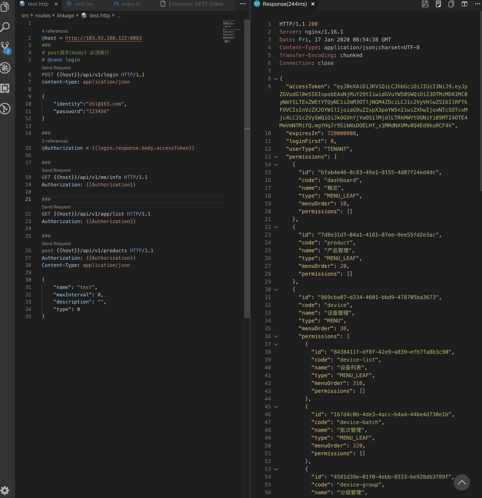

@host = http://103.93.180.122:8083
###
# post请求{body} 必须换行
# @name login
POST {{host}}/api/v1/login HTTP/1.1
content-type: application/json
{
"identity":"zhl@163.com",
"password":"123456"
}
###
@Authorization = {{login.response.body.accessToken}}
###
GET {{host}}/api/v1/me/info HTTP/1.1
Authorization: {{Authorization}}
###
GET {{host}}/api/v1/app/list HTTP/1.1
Authorization: {{Authorization}}
###
post {{host}}/api/v1/products HTTP/1.1
Authorization: {{Authorization}}
Content-Type: application/json
{
"name": "test",
"maxInterval": 0,
"description": "",
"type": 0
}
注意点：
1.# @name login 代表login的api
2.post请求设置body({})时，和header设置间隔1行
